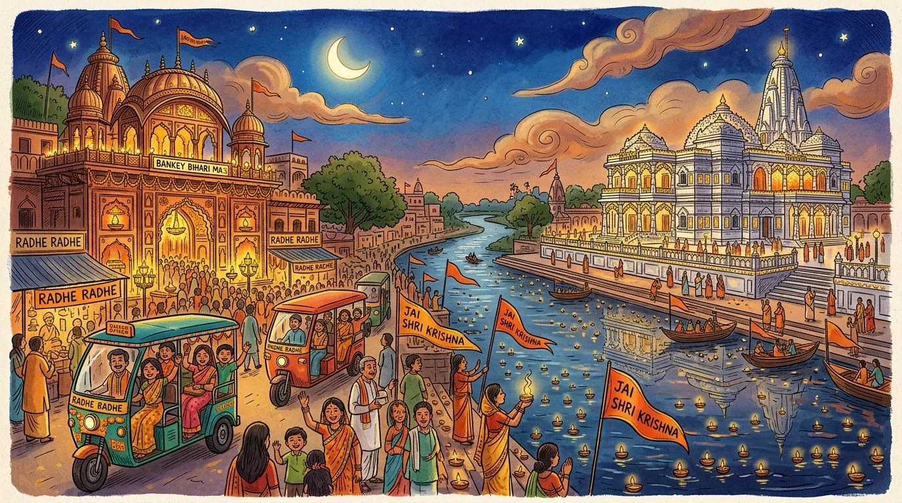
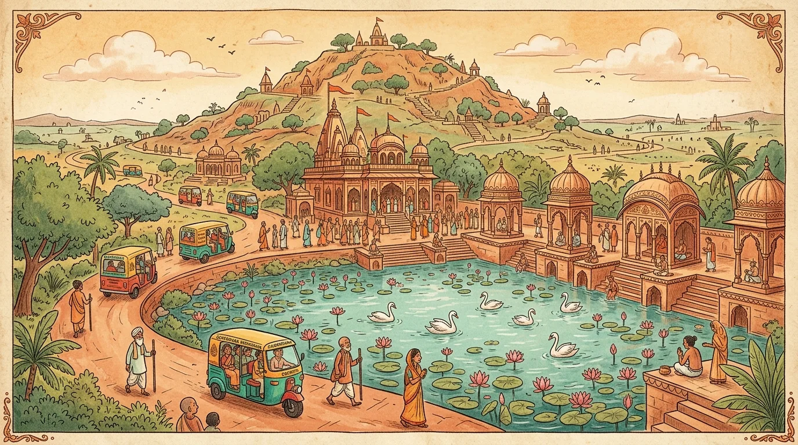
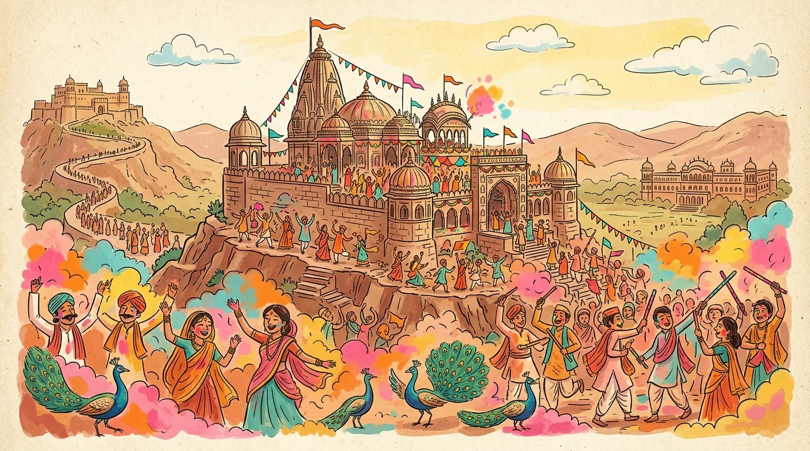

Why is Brij 84 Kos Parikrama Revered?
The eternal playground of Shri Radha and Krishna where every particle of dust (Brij Raj) is worshipable.
The 12 Holy Forests (Dvadasa Vans)
Divided across the eastern and western banks of the divine Yamuna river.
1. Madhuvan
Where Dhruva Maharaja meditated on Lord Vishnu and achieved divine darshan in 6 months. Also where Lord Shatrughna defeated the demon Lavanasura.
2. Talavan
The sweet palm grove where Lord Balarama defeated the donkey demon Dhenukasura, liberating the forest for cowherd boys to enjoy ripe palm fruits.
3. Kumudvan
Adorned with fragrant white lotus flowers (Kumuda). A tranquil retreat where Krishna and Balarama engaged in joyful water lilas with the Gopis.
4. Bahulavan
Named after the faithful cow Bahula. Site of Man Sarovar, where Shri Radha Rani withdrew in divine transcendental sulk (Maan Lila).
5. Kamyavan
The forest that fulfills all divine desires (Kama). Houses 84 sacred Kunds, Charan Pahadi, and the ancient deity of Shri Vrinda Devi.
6. Khadiravan
Where Lord Krishna killed the gigantic crane demon Bakasura. Contains Sangam Kund and sacred acacia groves where cows grazed peacefully.
7. Vrindavan
The heart of Brij Dham, dedicated to Tulasi Devi (Vrinda). Site of Maha Raas Lila, Seva Kunj, Nidhivan, and thousands of Radha Krishna temples.
8. Bhandirvan
Home of the colossal Bhandirvat banyan tree where Brahma ji personally performed the cosmic Gandharva wedding of Shri Radha and Krishna.
9. Bhadravan
Located on the eastern bank of Yamuna. Filled with auspicious Bhadra trees where Krishna and Balarama shared butter milk and lunch.
10. Mahavan (Gokul)
Where Nanda Baba's palace stood and Krishna spent his tender childhood. Sites include Brahmand Ghat, Chaurasi Khamba, and Raman Reti.
11. Lohavan
Where the iron-bodied demon Lohasura was vanquished. Rich in mineral springs and sacred kadamba trees commemorating Krishna's cowherd pastimes.
12. Bilvavan
Filled with sacred Bel trees. Where Goddess Lakshmi performed thousands of years of tapasya desiring to participate in Krishna's Raas Lila.
Key Dhams of the 84 Kos Circuit
Visual gateways to the divine pasturelands, sacred hills, and eternal pastimes.

Central DhamHome of Shri Bankey Bihari, Radha Raman, and divine Yamuna Ghats.

Giriraj SevaThe 21 km sacred parikrama path, Dan Ghati, and sublime Radha Kund.

Radha Rani PalaceBhanugarh hilltop palace, Mor Kuti, and the historic land of Lathmar Holi.
7-Day Recommended Yatra Itinerary
Optimized for senior citizens, families, and solo devotees with minimal transit fatigue.
Mathura & Sacred Ghats
Shri Krishna Janmabhoomi, Dwarkadhish Mandir, Vishram Ghat Yamuna Maha Aarti at dusk, and Madhuvan darshan.
Mahavan, Gokul & Rawal
Chaurasi Khamba, Raman Reti, Brahmand Ghat, and Rawal Dham (the sacred birthplace of Shri Radha Rani).
Vrindavan Central Darshan
Shri Bankey Bihari Mangala darshan, Radha Raman Ji, Radha Damodar, Seva Kunj, Nidhivan, and Yamuna boat parikrama.
Bhandirvan, Belvan & Mansarovar
The cosmic wedding tree at Bhandirvan, Lakshmi Ji taposthali at Belvan, and tranquil Man Sarovar parikrama.
Govardhan 21 km Giriraj Parikrama
Dan Ghati, Radha Kund, Shyam Kund, Kusum Sarovar, Jatipura Mukharbind, and Manasi Ganga snan.
Barsana & Nandgaon Dham
Shri Radha Rani Mandir (Bhanugarh), Rangeeli Mahal, Mor Kuti, Nand Bhavan, and Pavana Sarovar.
Kamyavan & Kokilavan
Chaurasi Kund parikrama in Kamyavan, Charan Pahadi, and Shani Dev temple with Kokila cuckoo grove.
Need a Dedicated Brajwasi Sarathi?
Book an AC cab or verified electric rickshaw driven by native devotees who know every hidden kund, shortcut lane, and aarti timing.
Open Live Booking →Frequently Asked Questions
Essential answers for planning your sacred 84 Kos pilgrimage.